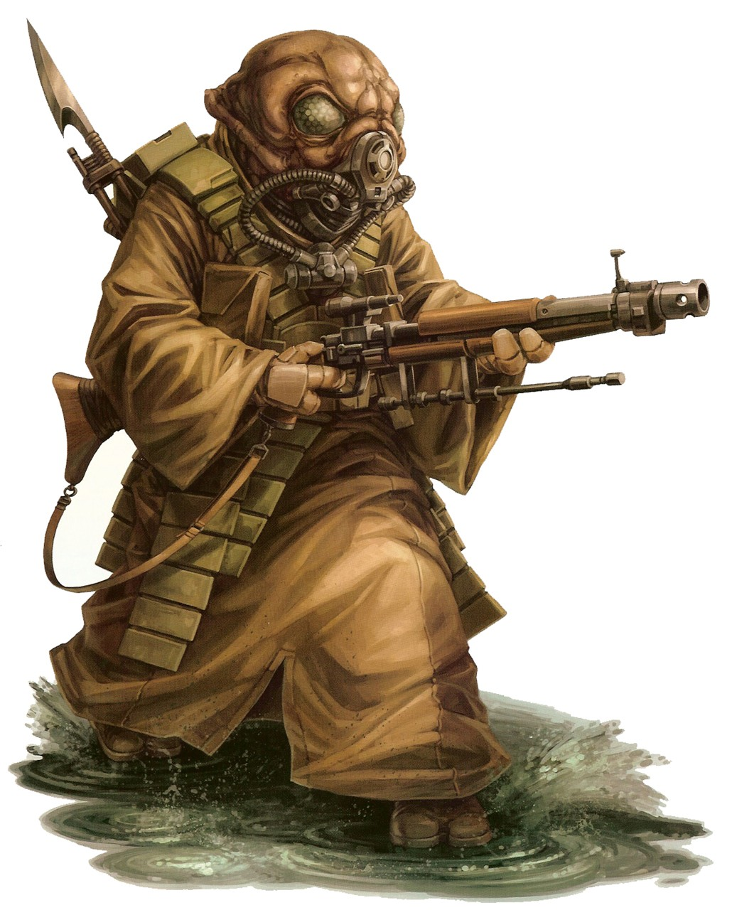

Gand
gand
Special Abilities: Gands begin the game with one rank in Discipline. They still may not train Discipline above rank 2 during character creation.
Ammonia Breathers: One notable difference between the two main sub-species of Gand is that one has lungs and one does not. Those that have lungs breathe an ammonia gas mixture. Those without lungs do not respire and gain all necessary metabolic substances through food. When playing a Gand, each player chooses whether he wishes his character to have lungs or not. If he selects to be playing a lungless Gand, his character is immune to suffocation (but not the wounds suffered from being exposed to vacuum). If he chooses to play a Gand with lungs, he starts the game with an ammonia respirator, and treats oxygen as a dangerous atmosphere with Rating 8. However, he gains + 10 starting XP.
With a cultural outlook that some consider simple or transcendent, the Gand, an insectoid species, enjoy a deep and complicated culture. Their emotional steadiness and (apparent) humility should make the members of this species natural disciples of the Force. However, it takes a specific kind of ambition to walk the Jedi path.
The Gand compromise numerous subspecies. Two of the most commonly known subspecies are Gand with lungs (who thus require ammonia respirators) and Gand without lungs who absorb the necessary compounds through consumed food and liquids. There are many other subspecies, and rumors of genetic manipulation abound, but no outsider has verified these claims. The Gand find questions about their physiology perplexing and a little embarrassing.
On average, Gand stand a little over one-and-a-half meters tall, have three fingers on each hand, and have large compound eyes capable of sensitive night vision. Their skin color range from brown to green to purple. Due to their genetic diversity, many Gand possesses characteristics that vary from the norm, including heads of unusual shapes and sizes, additional fingers, and multiple versions of internal organs. All Gand tend to have a tough yet flexible exoskeleton, and their regenerative abilities are remarkable, making them a hardy species.
Gand society, to outsiders, appears to contain a multitude of contradictions, mostly due to the visitors’ imperfect knowledge. For example, early academic records suggest the Gand had a monarchy. However, no such currently lineage exists, and the Gand don’t appear to have a word for queen or king. Whether the records detailed an offshoot colony, the Gand evolved away from a monarchical government, or the original academic mistakenly attributed hive insect characteristics to the species, only the Gand might know, and they have no interest in the topic.
Other academics call Gand society meritocratic. While the Gand value individual achievement, they don’t believe it superior to communal achievement, simply different. For example, individual Gand have no first name until achieving something notable. However, there is no shame in only owning a surname. After all, a society requires the hard work and dedication of the unnamed. Some academics believe that becoming notable, and thus more individual, separates a Gand from the community, resulting in a philosophical crisis for that individual. Again, only non-Gand project any negative connotation onto this change in status. To Gand, individuality is necessary and natural, both a loss and a gain, and a process that is simultaneously complex and simple.
Gand refer to themselves as “this Gand” up until they become full-fledged members of society. At that point, they refer to themselves by their surname. If Gand achieve something particularly impressive, such as becoming findsmen, they may introduce themselves with their first name. Only the most accomplished of Gand call themselves “I.” If a Gand performs a shameful act, that individual may revert to a single name or no name at all as temporary penance.
The Gand undergo this process of naming due less to rigid rules than to the structure of their society, culture, and language. They view self-promotion the same way. For a Gand, faking a name or reputation is as odd and strange as a human introducing herself using the name of a famous Duros actor. While there are instances of Gand falsifying a name, they are rare outliers.
Outsiders tend to call Gand xenophobic, but the insectoid species bears no widespread hatred or fear of non-Gand. Gand are, however, particularly concerned about the disruption of their culture by outsiders. Even the casual adoption of a loan word may cause confusion and miscommunication that ripples unpredictably throughout Gand society. The fact that their ammonia-based atmospheres allow them to segregate outsiders makes avoiding culture disruption an easy matter, however. It also helps that traveling Gand often return to their homeworld or a nearby Gand society to get back to their roots.
Academics have various theories about contradictory reports on Gand society. Some believe the society is undergoing rapid changes and cultural shifts. Others believe the Gand explain themselves in vague and contradictory terms to prevent cultural disruption. A few academics suggest the misinformation is a deliberate cultural prank—an example of Gand humor.
The rocky Outer Rim planet Gand, located in the Shadola sector of the Slice, has an atmosphere of thick ammonia mists that is toxic to most oxygen-breathing life forms. Gand isn’t near any major hyperspace lanes, and is close to the Centrality, a region so devoid of stars that starships have been known to run out of fuel when crossing its barren expanse. For these reasons, as well as for the species’ insular nature, Gand remains isolated from the rest of the galactic community.
However, outsiders can visit at the various orbital stations surrounding the homeworld, built to facilitate trade. The Gand designed the stations for the comfort of offworlders, so they can wander about freely while the Gand wear breathing apparatuses. A few privileged offworlders have been given permission to set foot on Gand soil, but only in the alien quarters at spaceports. As the ammonia mists are usually thick and dangerous, the majority of offworlders do not protest this arrangement.
The language of Gand is spoken with drones and clicks that non-Gand find difficult to emulate. Likewise, most Gand struggle to produce the sounds for Basic, and so they depend on translator modules or droids. The particulars of the Gand language means translations often sound simplistic or “childlike,” adding to the perception that Gand are uncomplicated and humble.
Gand who travel offworld make dedicated efforts to learn other languages (mostly to avoid embarrassing misunderstandings). These individuals manage to master Basic, although the Gand language’s drones and clicks color their pronunciation. Whether these Gand have the physiology to speak Basic, simply the motivation to learn, or a mix of both, the Gand won’t say.
Due to linguistic differences, it is difficult to understand the Gand’s relationship to the Force. Gand would simply say they have no relationship, and that it is a meaningless question. Perhaps the Force isn’t a separate perception as any other Gand sense, or perhaps they don’t have an equivalent word for the Force.
Other species with knowledge of the Force think that only Gand findsmen are Force-sensitive, and findsmen’s prey swear those Gand do have something more than simple talent. In addition, findsmen exhibit a specific kind of mysticism in hunting their prey, seeing signs and portents in everyday things: swirls in smoke, scratches on durasteel, or reflections on transparisteel. The findsmen are in decline, however, and accounts of their abilities have been fading into myth and legend, just like tales of the Jedi.
Gand mysticism immediately summons the image of the findsmen. Expert trackers, the findsmen turned this profession into a religious pilgrimage, gaining a well-earned reputation for tracking prey, lost objects, and missing people.
This mysticism, however, bears a strong resemblance to the Force. Some believe that the religious worship the findsmen utilize can be found in any Gand who seek out notoriety and excellence in the earning of their name, a process they call janwuine. The act of obtaining janwuine, of becoming a master at a task, is itself a mystical act.
A Gand weaponsmith, for example, would prepare to make future masterpieces in similar ways, traveling the galaxy to learn the best weapon-crafting techniques and following mystic insights to unearth old technologies. Gand consider the travel itself a necessary tempering of body and mind before crafting a masterwork.
However, most of this is conjecture on the behalf of non-Gand academics. Outsiders may call this work following the path of the Force. Gand would simply call this earning their name.